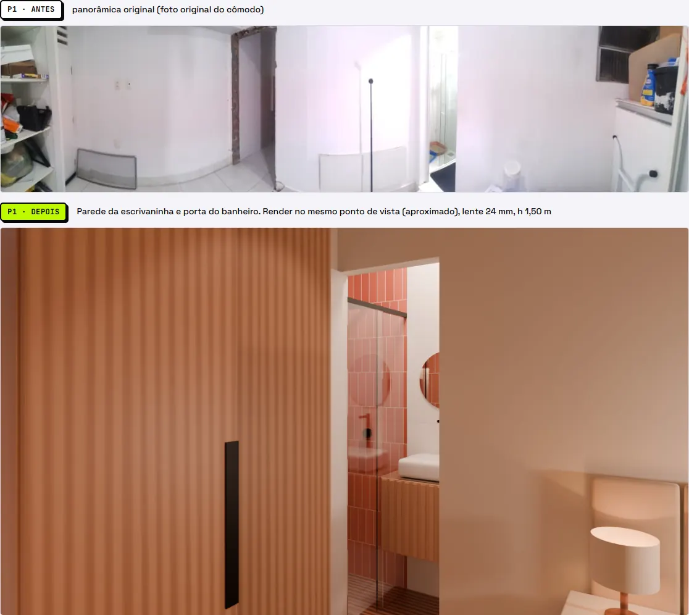
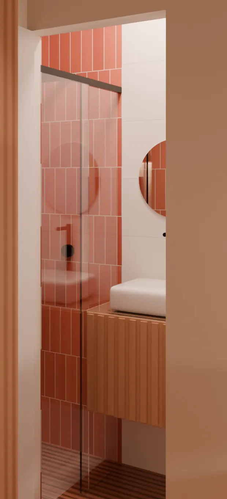

Passo 04 de 04 · Modelo 3D, renders e página de entrega
Modelo 3D, tour 360° e antes e depois num arquivo só
Com o Blender instalado, ele lê a pasta dos três passos anteriores, gera por script o modelo 3D, os renders e o tour 360° e junta tudo num HTML de entrega, com plantas, produtos, quantitativos e pendências.
# PEDIDO Joguei tudo isso numa pasta: levantamento, plantas, conceito, especificação, orçamento e as fotos do cômodo. Gere no Blender, por script, o modelo 3D, os renders do antes e depois e o tour 360. Depois monte UM arquivo HTML só, com tudo dentro, que abre no navegador: modelo 3D navegável, tour 360 entre os ambientes, antes e depois lado a lado e as pendências. # CONTEXTO Este comando exige o Blender instalado e um chat com acesso a terminal e aos arquivos da máquina (ex.: Claude Code ou Cowork). Num chat sem terminal ele não roda: o modelo 3D, os renders e o tour 360° saem do Blender, rodando por script Python em background. Sem Blender: faça só a ETAPA 4 (página), com o que já estiver na pasta. Seção de modelo 3D, renders, antes e depois ou tour 360° sem arquivo fica fora da página e vai para pendencias.md com o motivo "Blender não disponível". Para o viewer 3D e o tour, a página carrega o three.js pela internet. Para testar a página, é preciso um navegador. Medida que o modelo precisa e o levantamento não tem (altura de porta, peitoril, posição de uma louça) não para o trabalho: entra como SUPOSIÇÃO, e você me mostra a lista no fim para eu confirmar. Projeto de reforma de um cômodo residencial. O uso e o estilo estão em conceito_layout.md. Identidade visual da página: [IDENTIDADE VISUAL — ex.: fundo creme, texto grafite, destaque amarelo, títulos em fonte condensada caixa alta, ou o caminho do manual da marca do escritório]. Nome do projeto no carimbo: [NOME DO PROJETO — ex.: REFORMA HOME OFFICE]. # ENTRADA Na pasta [PASTA — ex.: ./output] estão as saídas dos três comandos anteriores, junto com os renders que você já tiver: - levantamento.md e planta_atual.svg: medidas do cômodo, vãos, pé-direito e pontos fixos. - conceito_layout.md e planta_layout.svg: o conceito, a justificativa do layout e a posição e as cotas dos móveis. - especificacao.md: produtos com link, preço, dimensões L×P×A, material, cor e origem da geometria. - orcamento.xlsx. - pendencias.md. - As fotos originais do cômodo (o "antes"). - Se já existirem: modelo .glb, renders e panorâmicas 360°. Use esses arquivos e não refaça a etapa correspondente. # TAREFA Faça o PEDIDO nesta ordem. ETAPA 1 — MODELO 3D - Ache o Blender instalado no computador. Se não achar, pergunte o caminho. Se a resposta for que não tem Blender, pule para a ETAPA 4. - Construa o cômodo exatamente com as dimensões do levantamento, em metros e escala real: espessura das paredes, pé-direito, vãos de porta e janela. - Posicione cada móvel como está na planta_layout.svg. - Se a especificação apontar um modelo 3D do fabricante e o arquivo estiver na pasta, importe esse modelo. Se não, modele paramétrico respeitando as dimensões da ficha, com forma, proporções, pés, braços e espessuras fiéis às fotos do produto. - Materiais PBR que reproduzam cor e textura reais de cada produto. Para usar texturas CC0 (Poly Haven, ambientCG), peça autorização antes de baixar. Sem autorização, use materiais procedurais do próprio Blender. - Valide: nenhum móvel no giro de porta, no vão de porta ou janela (mais 15 cm à frente), atravessando parede ou outro móvel. Liste as colisões encontradas em colisoes.json, também quando a lista sair vazia. - Exporte também o .glb, só com as cores base: as texturas procedurais não vão para esse formato. Registre isso em pendencias.md. ETAPA 2 — RENDERS - Cycles, denoise ativo, mínimo 512 samples, 2560×1440, gestão de cor AgX. - Iluminação: luz natural pelas janelas reais do levantamento (sol + céu/HDRI) e as luminárias especificadas, com a temperatura de cor da ficha. Janela marcada como vedada ou fechada não entra. - Câmeras: reproduzir os mesmos pontos de vista das fotos originais (comparativo antes/depois) e mais 2 vistas livres. Lente 24–28 mm, altura 1,50 m, verticais corrigidas. Se a foto for panorâmica ou grande-angular, o render é uma aproximação dela: escreva isso na legenda e em pendencias.md. - Faça um render de teste em baixa resolução, abra a imagem e analise: imagem preta (câmera dentro de um móvel), super ou subexposição, dominante de cor, peças sobrepostas. Corrija e só então rode o final. ETAPA 3 — TOUR 360° - Panorâmicas equirretangulares no Cycles, 4096×2048, com a mesma luz dos renders. Pontos: [PONTOS — ex.: centro do cômodo, entrada, banheiro, vista de quem está sentado na poltrona], cada um com altura declarada (1,50 m em pé; menor para quem está sentado ou deitado). - Primeiro uma panorâmica de teste em baixa resolução, para conferir a orientação e se o ponto não caiu dentro de um móvel. - Grave a posição de cada ponto (x, y, altura em metros) em tour360/pontos.json. ETAPA 4 — PÁGINA Um HTML autocontido, com imagens, plantas e o .glb embutidos no arquivo, e as seções: - levantamento; - plantas (atual e layout); - conceito e layout (de conceito_layout.md); - viewer 3D (three.js carregando o .glb); - tour 360°: visor arrastável, com marcadores clicáveis para pular de um ponto a outro; - antes e depois: cada foto original ao lado do render do mesmo ponto de vista; - tabela de produtos com links; - quantitativos com memória de cálculo; - colisões encontradas; - entregáveis: link relativo só para os arquivos que existem na pasta (ex.: orçamento, plantas, modelo; pranchas, só se existirem); - pendências. Aplique a identidade visual indicada no CONTEXTO. Sem endereço, cidade ou nome do cliente na página. Carimbo no rodapé: [NOME DO PROJETO] · REV. 00 · DATA · FOLHA X/Y. # REGRAS - Trabalhar numa pasta work ao lado da [PASTA] (crie se não existir); entregáveis finais na própria [PASTA]. - Medida do modelo vem do levantamento ou da ficha. A que faltar é adotada e entra em pendencias.md como SUPOSIÇÃO, com o valor adotado e o motivo. Não apresente medida adotada como medida do levantamento. - Seção cujo arquivo não existe (sem Blender, render que falhou, foto que falta) fica fora da página e vira pendência com o motivo. Não preencha com imagem genérica. - Não copie para a página número que não esteja nos arquivos da pasta. - pendencias.md é acumulado: leia, não apague nem renumere o que os comandos anteriores escreveram, e acrescente ao fim. Prefixos deste comando: R3D- (modelo e renders) e PG- (página e tour). Situação: ABERTA, SUPOSIÇÃO ou RESOLVIDA (com data e fonte). # SAÍDA Na [PASTA]: - modelo_3d.glb - renders/ (vistas finais em PNG) - tour360/ (panorâmicas em PNG + pontos.json) - entrega.html - pendencias.md, com as entradas R3D- e PG- acrescentadas Em work: os scripts do Blender e colisoes.json. Na resposta: a lista das medidas adotadas como SUPOSIÇÃO, com o valor de cada uma, para eu confirmar. # CHECAGEM ANTES DE ENTREGAR - Abra a página no navegador: o 3D carrega e gira? O tour arrasta e cada marcador leva ao ponto certo? Há erro no console ou id repetido? Sem navegador, registre "página não testada no navegador" em pendencias.md. Sem internet, o three.js não carrega: registre "3D e tour não testados (sem internet)". - Cada render final passou por um teste em baixa analisado antes? - colisoes.json existe e a seção de colisões da página diz o mesmo que ele? - Cada antes e depois compara o mesmo ponto de vista, e as aproximações estão marcadas? - Toda seção que ficou fora está em pendencias.md com o motivo? - Todo link da seção entregáveis abre um arquivo que existe na pasta?
O que ele resolve
Entrega de projeto de interiores costuma ser imagem avulsa: um render por mensagem, a planta num PDF, a lista de produtos noutro arquivo, e o cliente montando o quebra-cabeça. E render bonito esconde o que ninguém conferiu: móvel no giro da porta, medida que ninguém tirou, ângulo que não é o da foto.
Esse prompt monta o cômodo no Blender em escala real com as medidas do levantamento, confere colisão de móvel com porta, janela e parede e só roda o render final depois de um teste em baixa que ele mesmo abre e analisa. Seção sem arquivo fica fora da página e vira pendência com o motivo, em vez de ganhar imagem genérica. Sem Blender não tem 3D, render nem tour: ele faz só a página com o que já está na pasta e anota o que ficou de fora.
O que ele devolve




Saída de exemplo · Modelo 3D, tour 360° e antes e depois · Dados reais anonimizados
Macete(ando o apocalipse)
- Esse processo tende a ser mais preciso depois que você configurar as skills e agentes. Te explico como fazer essas coisas na nossa newsletter, o Campo Minado. Só clicar aqui.
- O engenheiro da nova geração é, acima de tudo, responsável. Lembre-se que IA pode cometer erros. Use ela como um facilitador, não como verdade definitiva. O prompt organiza e explicita o cálculo — quem responde pelo número continua sendo você.
- O HTML é um arquivo só, mas o viewer 3D e o tour carregam o three.js pela internet. Sem conexão, essas duas seções não abrem, e quando ele não consegue testar isso fica escrito em pendências. Antes de mandar pro cliente, abre o arquivo noutra máquina, com internet, e gira o modelo.
- Nenhuma colisão quer dizer nenhuma das que ele procurou: giro e vão de porta, vão de janela com 15 cm à frente, móvel atravessando parede ou outro móvel. No exemplo foram 7 verificações, todas limpas. Tomada, interruptor e ar-condicionado que não estão no levantamento não existem pro modelo: confere no local antes de mandar fazer marcenaria.
- O antes e depois compara o mesmo ponto de vista, mas aproximado: foto panorâmica ou grande-angular não se reproduz com lente de 24–28 mm, e a legenda avisa. No exemplo são 3 pares (P1, P2 e P3) e mais 2 vistas livres. Mostra pro cliente como o mesmo canto do cômodo, não como montagem em cima da foto dele.
- O
modelo_3d.glbleva só a cor base: textura procedural não sai do Blender nesse formato, e o prompt manda registrar isso em pendências. Quem abrir o .glb noutro programa vê cor chapada, sem a textura que aparece nos renders. E textura CC0 baixada da internet, só com a sua autorização. - Altura de porta, peitoril, posição de louça: o que o levantamento não tem, ele adota, segue o trabalho e te devolve no fim como SUPOSIÇÃO, com o valor de cada uma. O render fica igualzinho com medida tirada ou chutada. Responde a lista antes de mandar a entrega, porque render lindo com peitoril chutado é só chute com iluminação boa.
Cada passo consome a saída do anterior
Esse é só um dos prompts que uso no meu dia a dia pra ganhar mais tempo livre.
Posto isso e muito mais no Instagram.